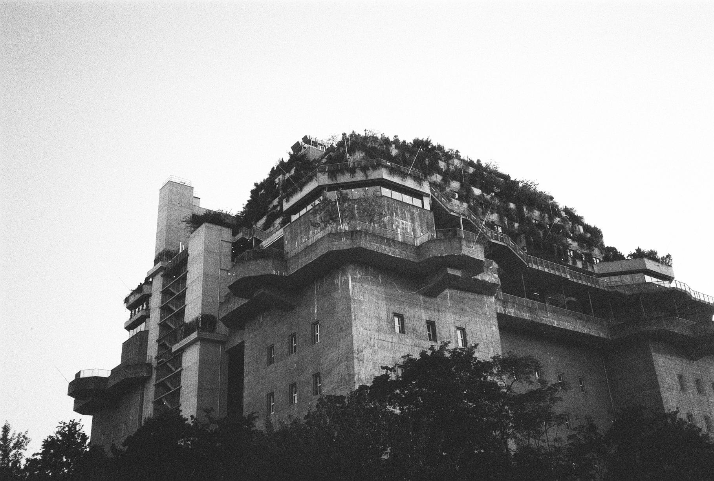
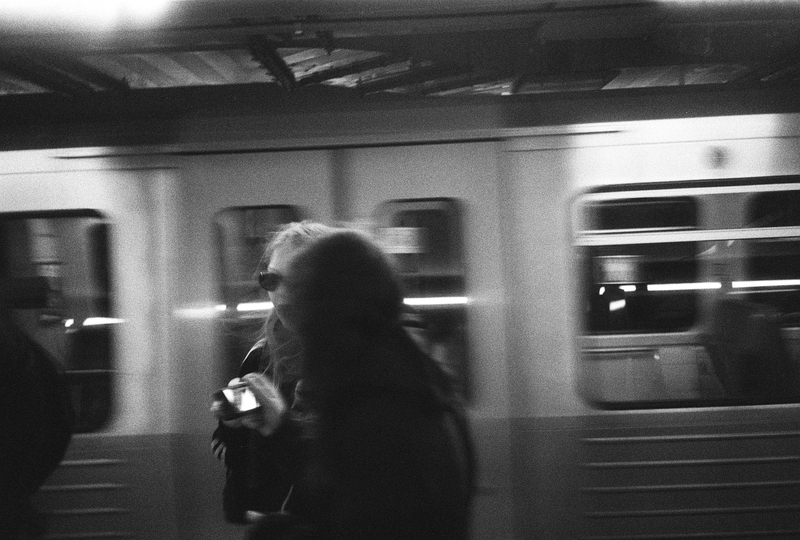
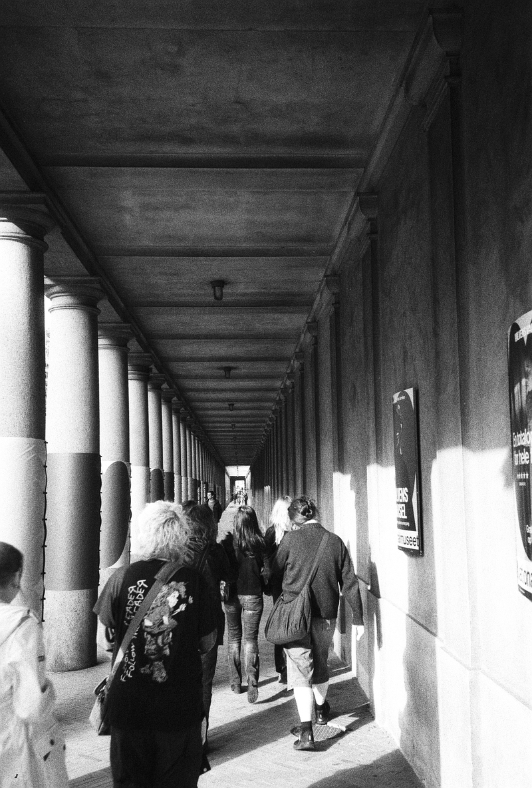
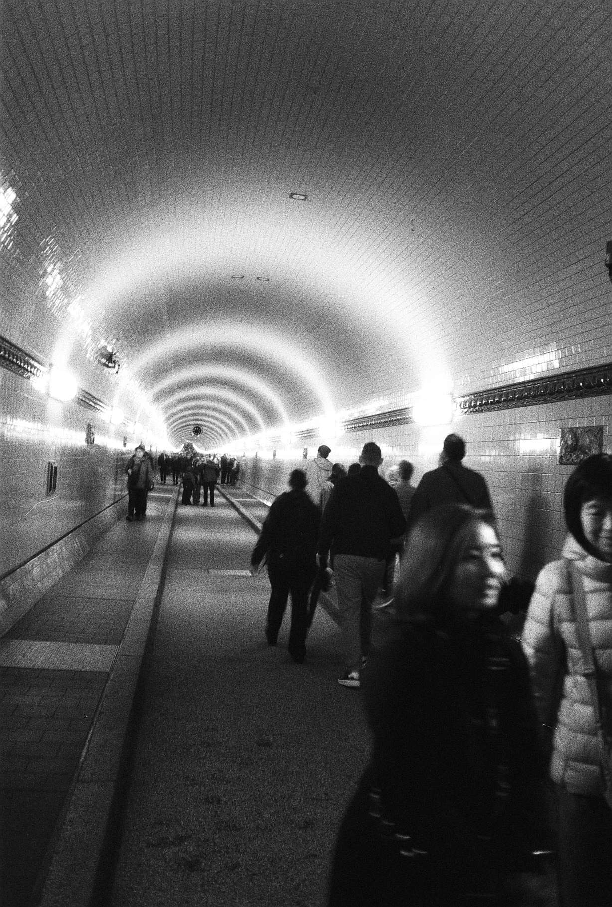

St. Pauli, Hamburg (2025)

Jungfernstieg, Hamburg (2025)

Jungfernstieg, Hamburg (2025)

Hamburg (2025)

Speicherstadt, Hamburg (2025)

Alter Elbtunnel, Hamburg (2025)

Eriksberg, Göteborg (2023)